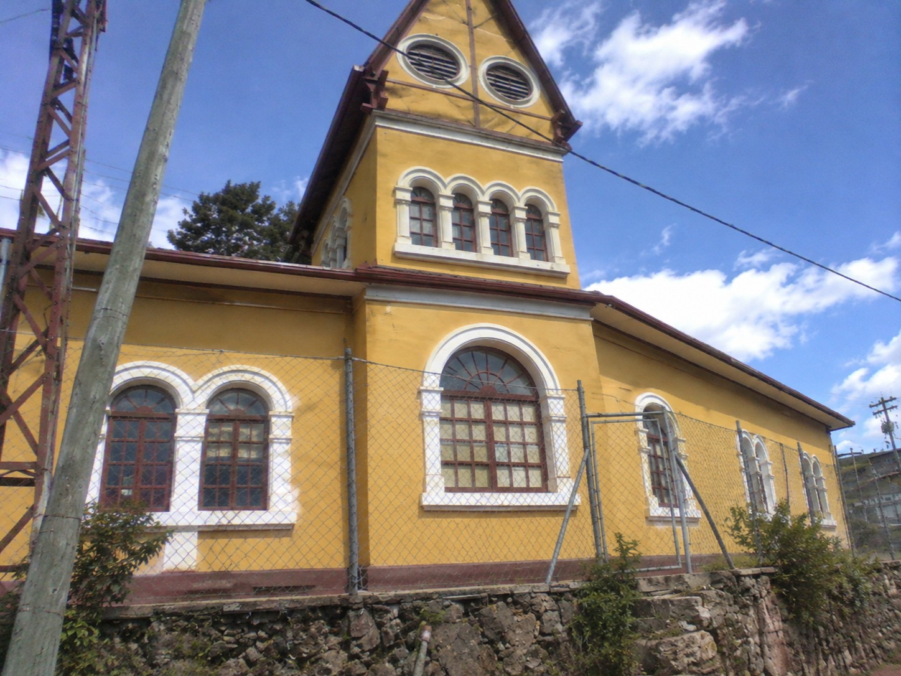
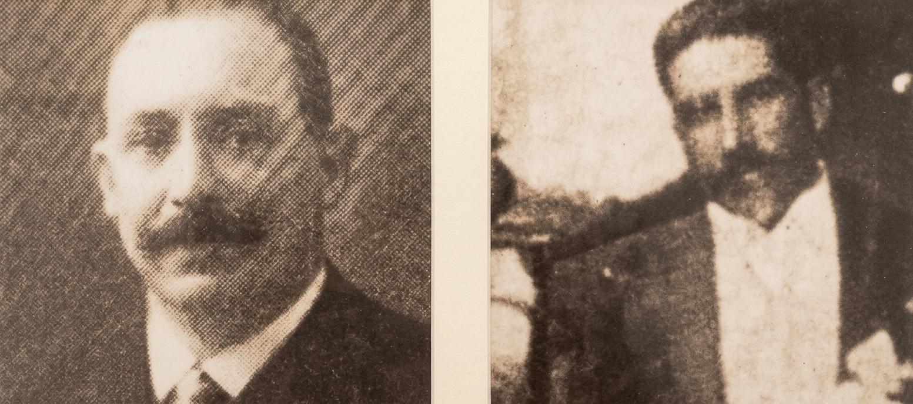
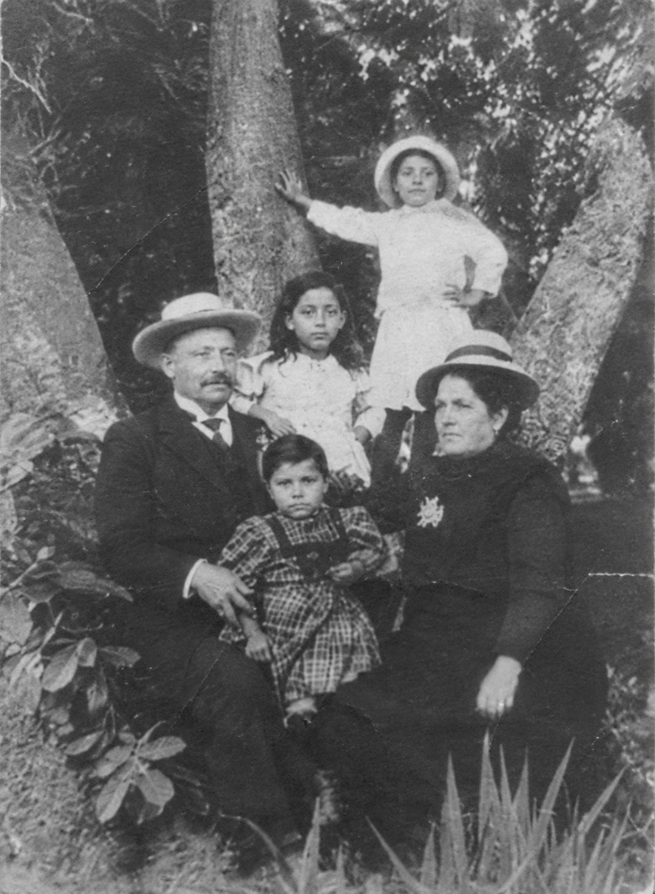
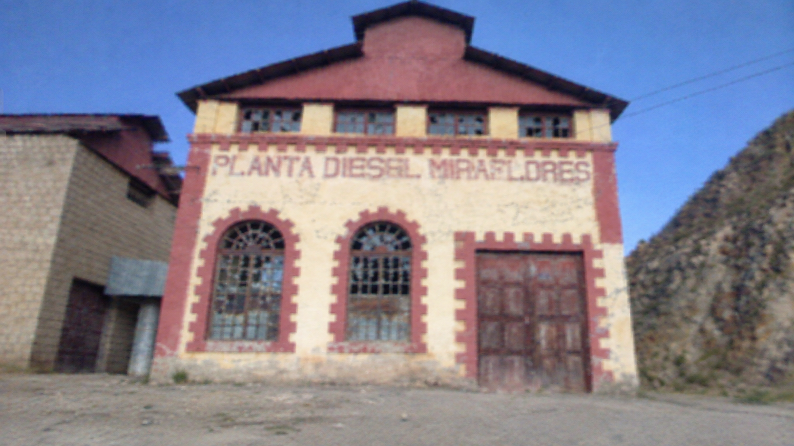
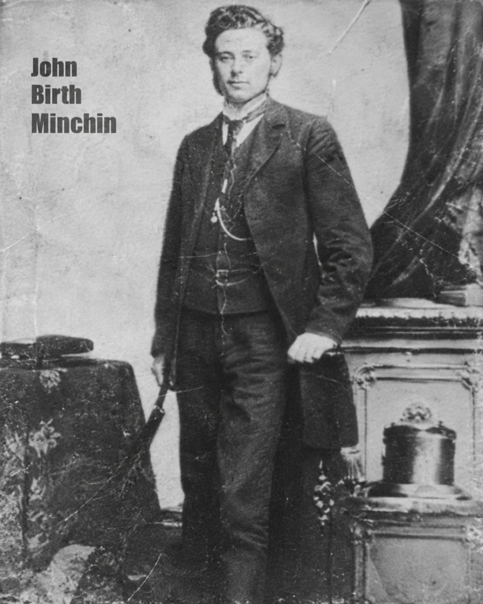
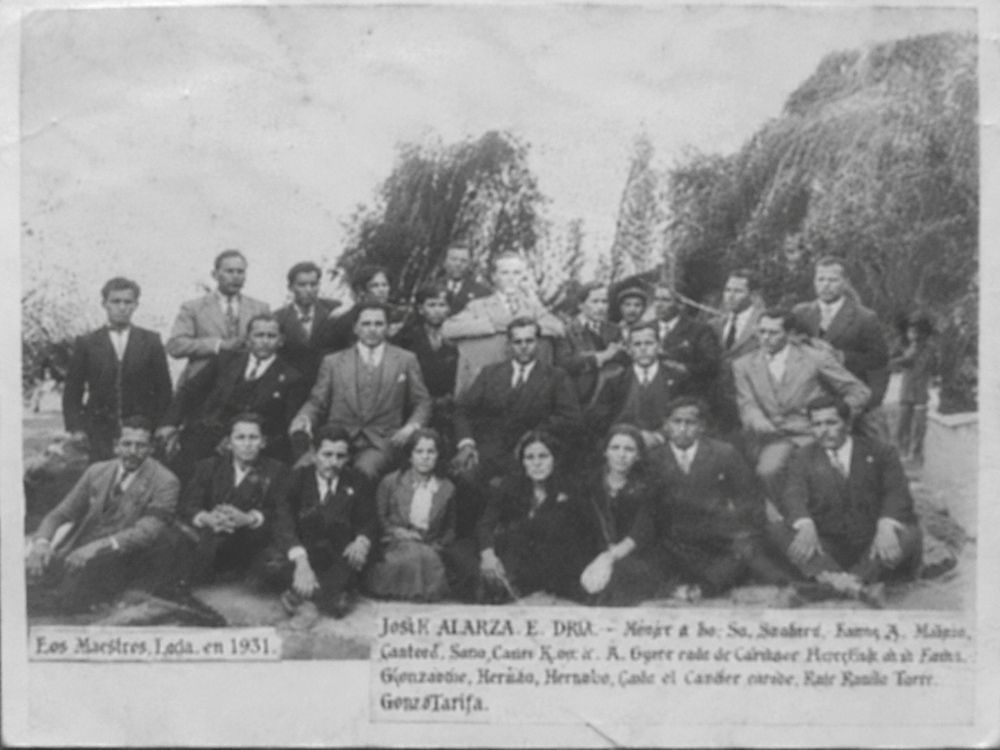

El Palacio en Miraflores
Vista actual del inmueble de 73 ambientes con su fachada mostaza y torre de inspiración escocesa en Uncía.
Al entrar a cada modelo o hacer clic para ampliarlo en grande, la crónica histórica se auto-escribe en tiempo real.
Tras el descubrimiento de la célebre veta de estaño en la mina La Salvadora y la consolidación de la sociedad con Sergio Ortiz, Simón I. Patiño comprendió que para colocar a Uncía a la vanguardia mundial debía electrificar e industrializar la montaña a más de 3.800 metros de altitud. En 1901 hizo traer desde Alemania, cruzando el océano y la cordillera andina, los colosales motores fabricados por la casa alemana Diesel (Sulzer/MAN).
Instaladas en los enormes galpones de calamina de la zona de Miraflores —visibles directamente desde los ventanales del palacio familiar donde Simón y Albina Rodríguez Ocampo residieron entre 1899 y 1905—, estas modernas maquinarias proveían de energía eléctrica continua a los campamentos mineros, las plantas de concentración metalúrgica, los compresores de aire para perforación neumática, el hospital y al pueblo entero de Uncía.
La historia guarda un dato extraordinario sobre estas máquinas: sus dos únicos motores gemelos fabricados en el siglo pasado en Alemania duermen desde abril de 1912 en el fondo del océano Atlántico, bajo la armadura del transatlántico RMS Titanic. En los talleres de Uncía aún se conservan las gigantescas llaves inglesas de acero forjado con las que los mecánicos e ingenieros ajustaban los cilindros y volantes de inercia, tan pesadas que resultaban imposibles de levantar por un solo hombre.
Este complejo industrial impulsó una Uncía cosmopolita donde se hablaban hasta 15 idiomas y donde, el 1 de mayo de 1923, cinco mil trabajadores marcharon hasta la plaza Alonso de Ibáñez para fundar el primer sindicato minero de Bolivia exigiendo la jornada de 8 horas, un año antes de que la administración fuera trasladada hacia Catavi en 1924.

Vista actual del inmueble de 73 ambientes con su fachada mostaza y torre de inspiración escocesa en Uncía.

Panorámica histórica de la localidad minera cuando albergaba consulados, comercios europeos y 15 idiomas.

El empresario cochabambino que forjó desde el cerro Juan del Valle y La Salvadora el mayor imperio mundial del estaño.

La familia para quien se edificó la primera residencia señorial entre 1899 y 1905 tras la promesa en la bocamina.

Nave industrial que albergó los motores alemanes gemelos del Titanic encargados de electrificar Uncía.

Especialistas europeos y bolivianos a cargo de la maquinaria pesada, perforadoras e ingenios de La Salvadora.

Encuentro social y administrativo en los salones del complejo minero durante el apogeo del estaño.

Registro documental de las históricas jornadas que marcaron a la provincia Rafael Bustillo en el norte de Potosí.